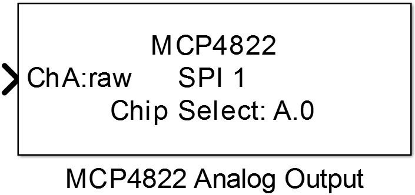

10.4. MCP4822 Analog Output
Outputs a variable analog voltage at the selected channel of the MCP4822 digital to analog converter.
10.4.1. Library
/SPI
10.4.2. Description
{kind=link}
This block configures a channel of the MCP4822 digital to analog converter to output a analog voltage proportional to the blocks input value. The maximum output voltage depends on the selected Gain parameter and can be 2.048V (Gain = x1) or 4.096V (Gain = x2).
10.4.3. Data Type Support
The block’s input port data type depends on the selected Mode parameter and can be uint16 (Mode = raw) or single (Mode != raw).
10.4.4. Parameters and Dialog Box

10.4.4.1. SPI Port
Selects the SPI peripheral wich is configured by an SPI Master Config block.
10.4.4.2. Chip Select Port and Pin
Configuration of the MCU Pin the device’s chip select input is connected to.
10.4.4.3. Channel
Selects one of the two output channels of the MCP4822 device.
10.4.4.4. Mode
Configures the data type and range of the block’s input port.
- raw → uint16 data type, range 0 to 4095
- voltage → single data type, range 0V to 2.048V (for Gain = x1) or 0V to 4.096V (for Gain = x2)
- relative → single data typ, range 0 to 1
10.4.4.5. Gain
Selects the gain amplifier of the internal reference voltage to change the maximum output voltage.